공조냉동기계산업기사 (2017-03-05 기출문제)
1과목: 공기조화
1. 온수난방의 특징에 대한 설명으로 틀린 것은?
- 증기난방보다 상하온도 차가 적고 쾌감도가 크다.
- 온도조절이 용이하고 취급이 증기보일러보다 간단하다.
- 예열시간이 짧다.
- 보일러 정지 후에도 실내난방은 여열에 의해 어느 정도 지속된다.
(정답률: 90%)

2. 냉방시의 공기조화 과정을 나타낸 것이다. 그림과 같은 조건일 경우 냉각코일의 바이패스 팩터는? (단, ① 실내공기의 상태점, ② 외기의 상태점, ③ 혼합공기의 상태점, ④ 취출공기의 상태점, ⑤ 코일의 장치노점온도 이다.)
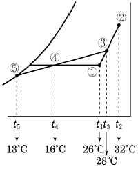
- 0.15
- 0.20
- 0.25
- 0.30
(정답률: 66%)
3. 유인 유닛 방식의 특징으로 틀린 것은?
- 개별 제어가 가능하다.
- 중앙공조기는 1차공기만 처리하므로 규모를 줄일 수 있다.
- 유닛에는 동력배선이 필요하지 않다.
- 송풍량이 적어서 외기냉방의 효과가 크다.
(정답률: 71%)
4. 공기의 상태를 표시하는 용어와 단위의 연결로 틀린것은?
- 절대습도 : [kg/kg]
- 상대습도 : [%]
- 엔탈피 : [kcal/m3·℃]
- 수증기분압 : [mmHg]
(정답률: 78%)
5. 전공기 방식에 의한 공기조화의 특징에 관한 설명으로 틀린 것은?
- 실내공기의 오염이 적다.
- 계절에 따라 외기냉방이 가능하다.
- 수배관이 없기 때문에 물에 의한 장치부식 및 누수의 염려가 없다.
- 덕트가 소형이라 설치공간이 줄어든다.
(정답률: 77%)
6. 여름철을 제외한 계절에 냉각탑을 가동하면 냉각탑 출구에서 흰색 연기가 나오는 현상이 발생할 때가 있다. 이 현상을 무엇이라고 하는가?
- 스모그(smog) 현상
- 백연(白煙) 현상
- 굴뚝(stack effect) 현상
- 분무(噴霧) 현상
(정답률: 91%)
7. 단일 덕트 방식에 대한 설명으로 틀린 것은?
- 단일 덕트 정풍량 방식은 개별제어에 적합하다.
- 중앙기계실에 설치한 공기조화기에서 조화한 공기를 주 덕트를 통해 각 실내로 분배한다.
- 단일 덕트 정풍량 방식에서는 재열을 필요로 할 때도 있다.
- 단일 덕트 방식에서는 큰 덕트 스페이스를 필요로 한다.
(정답률: 66%)
8. 팬코일 유닛에 대한 설명으로 옳은 것은?
- 고속덕트로 들어온 1차 공기를 노즐에 분출시킴으로써 주위의 공기를 유인하여 팬코일로 송풍하는 공기조화기이다.
- 송풍기, 냉온수 코일, 에어필터 등을 케이싱 내에 수납한 소형의 실내용 공기조화기이다.
- 송풍기, 냉동기, 냉온수코일 등을 기내에 조립한 공기조화기이다.
- 송풍기, 냉동기, 냉온수코일, 에어필터 등을 케이싱내에 수납한 소형의 실내용 공기조화기이다.
(정답률: 66%)
9. 풍량 450m3/min, 정압 50mmAq, 회전수 600rpm인 다익 송풍기의 소요동력은? (단, 송풍기의 효율은 50%이다.)
- 3.5 kW
- 7.4 kW
- 11 kW
- 15 kW
(정답률: 65%)
10. 배관 계통에서 유량을 다르더라도 단위 길이당 마찰 손실이 일정하도록 관경을 정하는 방법은?
- 균등법
- 정압재취득법
- 등마찰손실법
- 등속법
(정답률: 83%)
11. 다수의 전열판을 겹쳐 놓고 볼트로 연결시킨 것으로 판과 판 사이를 유체가 지그재그로 흐르면서 열교환 능력이 매우 높아 필요 설치면적이 좁고 전열관의 증감으로 기기 용량의 변동이 용이한 열교환기는?
- 플레이트형 열교환기
- 스파이럴형 열교환기
- 원통다관형 열교환기
- 회전형 전열교환기
(정답률: 83%)
12. 공기조화장치의 열운반장치가 아닌 것은?
- 펌프
- 송풍기
- 덕트
- 보일러
(정답률: 80%)
13. 축열시스템의 특징에 관한 설명으로 옳은 것은?
- 피크 컷(peak cut)에 의해 열원장치의 용량이 증가한다.
- 부분부하 운전에 쉽게 대응하기가 곤란하다.
- 도시의 전력수급상태 개선에 공헌한다.
- 야간운전에 따른 관리 인건비가 절약된다.
(정답률: 79%)
14. 바이패스 팩터에 관한 설명으로 틀린 것은?
- 공기가 공기조화기를 통과할 경우, 공기의 일부가 변화를 받지 않고 원상태로 지나쳐갈 때 이 공기량과 전체 통과 공기량에 대한 비율을 나타낸 것이다.
- 공기조화기를 통과하는 풍속이 감소하면 바이패스 팩터는 감소한다.
- 공기조화기의 코일열수 및 코일 표면적이 작을 때 바이패스 팩터는 증가한다.
- 공기조화기의 이용 가능한 전열 표면적이 감소하면 바이패스 팩터는 감소한다.
(정답률: 70%)
15. 온도 30℃, 절대습도 0.0271 kg/kg인 습공기의 엔탈피는?
- 89.58 kcal/kg
- 47.88 kcal/kg
- 23.73 kcal/kg
- 11.98 kcal/kg
(정답률: 44%)
16. 염화리튬, 트리에틸렌 글리콜 등의 액체를 사용하여 감습하는 장치는?
- 냉각감습장치
- 압축감습장치
- 흡수식감습장치
- 세정식감습장치
(정답률: 85%)
17. 수관식 보일러에 관한 설명으로 틀린 것은?
- 보일러의 전열면적이 넓어 증발량이 많다.
- 고압에 적당하다.
- 비교적 자유롭게 전열 면적을 넓힐 수 있다.
- 구조가 간단하여 내부 청소가 용이하다.
(정답률: 78%)
18. 실내 취득 현열량 및 잠열량이 각각 3000W, 1000W, 장치 내 취득열량이 550W이다. 실내 온도를 25℃로 냉방하고자 할 때, 필요한 송풍량은 약 얼마인가?(단, 취출구 온도차는 10℃이다.)
- 1⑤.6 L/s
- 150.8 L/s
- 295.8 L/s
- 346.6 L/s
(정답률: 41%)
19. 흡수식 냉동기에서 흡수기의 설치 위치는?
- 발생기와 팽창밸브 사이
- 응축기와 증발기 사이
- 팽창밸브와 증발기 사이
- 증발기와 발생기 사이
(정답률: 69%)
20. 실내 온도분포가 균일하여 쾌감도가 좋으며 화상의 염려가 없고 방을 개방하여도 난방효과가 있는 난방방식은?
- 증기난방
- 온풍난방
- 복사난방
- 대류난방
(정답률: 89%)
2과목: 냉동공학
21. 암모니아 냉동장치에서 팽창밸브 직전의 엔탈피가 128kcal/kg, 압축기 입구의 냉매가스 엔탈피가 397kcal/kg이다. 이 냉동장치의 냉동능력이 12냉동톤일 때, 냉매순환량은? (단, 1냉동톤은 3320 kcal/h이다.)
- 3320 kg/h
- 3328 kg/h
- 269 kg/h
- 148 kg/h
(정답률: 53%)
22. 일의 열당량(A)을 옳게 표시한 것은?
- A=427kg·m/kcal
- A=1/427kcal/kg·m
- A=102kcal/kg·m
- A=860kg·m/kcal
(정답률: 80%)
23. 브라인의 구비조건으로 틀린 것은?
- 비열이 크고 동결온도가 낮을 것
- 점성이 클 것
- 열전도율이 클 것
- 불연성이며 불활성일 것
(정답률: 81%)
24. 교축작용과 관계없는 것은?
- 등엔탈피 변화
- 팽창밸브에서의 변화
- 엔트로피의 증가
- 등적변화
(정답률: 66%)
25. 매시 30℃의 물 2000 kg을 -10℃의 얼음으로 만드는 냉동장치가 있다. 이 냉동장치의 냉각수 입구온도가 32℃, 냉각수 출구온도가 37℃이며, 냉각수량이 60m3/h 일 때, 압축기의 소요동력은?
- 81.4 kW
- 88.7 kW
- 90.5 kW
- 117.4 kW
(정답률: 28%)
26. 두께 20cm인 콘크리트 벽 내면에, 두께 15cm인 스티로폼으로 방열을 하고, 그 내면에 두께 1cm의 내장 목재판으로 벽을 완성시킨 냉장실의 벽면에 대한 열관류율은? (단, 열전도율 및 열전달률은 아래와 같다.)
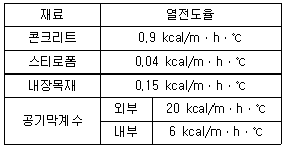
- 1.35 kcal/m·h·℃
- 0.23 kcal/m·h·℃
- 0.13 kcal/m·h·℃
- 0.02 kcal/m·h·℃
(정답률: 64%)
27. 카르노 사이클과 관련 없는 상태 변화는?
- 등온팽창
- 등온압축
- 단열압축
- 등적팽창
(정답률: 77%)
28. 액봉발생의 우려가 있는 부분에 설치하는 안전장치가 아닌 것은?
- 가용전
- 파열판
- 안전밸브
- 압력도피장치
(정답률: 60%)
29. 냉동부하가 30RT이고, 냉각장치의 열통과율이 6kcal/m2·h·℃, 브라인의 입·출구 평균온도 10℃, 냉매의 증발온도가 4℃일 때 전열면적은?
- 1825 m2
- 2767 m2
- 2932 m2
- 3123 m2
(정답률: 61%)
30. 진공계의 지시가 45 cmHg일 때 절대압력은?
- 0.0421 kgf/cm2abs
- 0.42 kgf/cm2abs
- 4.21 kgf/cm2abs
- 42.1 kgf/cm2abs
(정답률: 53%)
31. 냉동사이클에서 증발온도는 일정하고 응축온도가 올라가면 일어나는 현상이 아닌 것은?
- 압축기 토출가스 온도상승
- 압축기 체적효율 저하
- COP(성적계수) 증가
- 냉동능력(효과) 감소
(정답률: 73%)
32. 균압관의 설치 위치는?
- 응축기 상부 - 수액기 상부
- 응축기 하부 - 팽창변 입구
- 증발기 상부 - 압축기 출구
- 액분리기 하부 - 수액기 상부
(정답률: 65%)
33. 증기압축식 이론 냉동사이클에서 엔트로피가 감소하고 있는 과정은?
- 팽창과정
- 응축과정
- 압축과정
- 증발과정
(정답률: 71%)
34. 영화관을 냉방하는 데 360000 kcal/h의 열을 제거해야 한다. 소요동력을 냉동톤당 1PS로 가정하면 이 압축기를 구동하는데 약 몇 kW의 전동기가 필요한가?
- 79.8 kW
- 69.8 kW
- 59.8 kW
- 49.8 kW
(정답률: 33%)
35. 플래시 가스(flash gas)의 발생 원인으로 가장 거리가 먼 것은?
- 관경이 큰 경우
- 수액기에 직사광선이 비쳤을 경우
- 스트레이너가 막혔을 경우
- 액관이 현저하게 입상했을 경우
(정답률: 79%)
36. 어떤 냉동장치의 냉동부하는 14000 kcal/h, 냉매증기 압축에 필요한 동력은 3 kW, 응축기 입구에서 냉각수 온도 30℃, 냉각수량 69 L/min일 때, 응축기 출구에서 냉각수 온도는?
- 33℃
- 38℃
- 42℃
- 46℃
(정답률: 30%)
37. 압축기의 흡입 밸브 및 송출 밸브에서 가스누출이 있을 경우 일어나는 현상은?
- 압축일의 감소
- 체적 효율이 감소
- 가스의 압력이 상승
- 성적계수 증가
(정답률: 62%)
38. 온도식 팽창밸브에서 흐르는 냉매의 유량에 영향을 미치는 요인으로 가장 거리가 먼 것은?
- 오리피스 구경의 크기
- 고·저압측 간의 압력차
- 고압측 액상 냉매의 냉매온도
- 감온통의 크기
(정답률: 80%)
39. 정압식 팽창 밸브는 무엇에 의하여 작동하는가?
- 응축 압력
- 증발기의 냉매 과냉도
- 응축 온도
- 증발 압력
(정답률: 58%)
40. 할로겐 원소에 해당되지 않는 것은?
- 불소 [F]
- 수소 [H]
- 염소 [Cl]
- 브롬 [Br]
(정답률: 81%)
3과목: 배관일반
41. 다음과 같은 증기 난방배관에 관한 설명으로 옳은 것은?
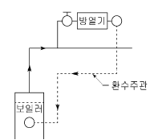
- 진공환수방식으로 습식 환수방식이다.
- 중력환수방식으로 건식 환수방식이다.
- 중력환수방식으로 습식 환수방식이다.
- 진공환수방식으로 건식 환수방식이다.
(정답률: 65%)
42. 개별식(국소식)급탕방식의 특징으로 틀린 것은?
- 배관설비 거리가 짧고 배관에서의 열손실이 적다.
- 급탕장소가 많은 경우 시설비가 싸다.
- 수시로 급탕하여 사용할 수 있다.
- 건물의 완성 후에도 급탕장소의 증설이 비교적 쉽다.
(정답률: 75%)
43. LP가스의 주성분으로 옳은 것은?
- 프로판(C3H8)과 부틸렌(C4H8)
- 프로판(C3H8)과 부탄(C4H10)
- 프로필렌(C3H6)과 부틸렌(C4H8)
- 프로필렌(C3H6)과 부탄(C4H10)
(정답률: 84%)
44. 냉·온수 헤더에 설치하는 부속품이 아닌 것은?
- 압력계
- 드레인관
- 트랩장치
- 급수관
(정답률: 74%)
45. 난방배관에서 리프트 이음(lift fitting)을 하는 응축수 환수방식은?
- 중력환수식
- 기계환수식
- 진공환수식
- 상향환수식
(정답률: 51%)
46. 증기난방 배관에서 증기트랩을 사용하는 주된 목적은?
- 관 내의 온도를 조절하기 위해서
- 관 내의 압력을 조절하기 위해서
- 배관의 신축을 흡수하기 위해서
- 관 내의 증기와 응축수를 분리하기 위해서
(정답률: 81%)
47. 보온재의 구비조건으로 틀린 것은?
- 열전달률이 클 것
- 물리적, 화학적 강도가 클 것
- 흡수성이 적고 가공이 용이할 것
- 불연성일 것
(정답률: 82%)
48. 공기조화 배관 설비 중 냉수코일을 통과하는 일반적인 설계 풍속으로 가장 적당한 것은?
- 2~3m/s
- 5~6m/s
- 8~9m/s
- 10~11m/s
(정답률: 85%)
49. 배수 배관에 관한 설명으로 틀린 것은?
- 배수 수평 주관과 배수 수평 분기관의 분기점에는 청소구를 설치해야 한다.
- 배수관경의 결정방법은 기구 배수 부하 단위나 정상 유량을 사용하는 2가지 방법이 있다.
- 배수관경이 100A 이하일 때는 청소구의 크기를 배수 관경과 같게 한다.
- 배수 수직관의 관경은 수평 분기관의 최소 관경 이하가 되어야 한다.
(정답률: 53%)
50. 배관의 행거(hanger)용 지지철물을 달아매기 위해 천장에 매입하는 철물은?
- 턴버클(turnbuckle)
- 가이드(guide)
- 스토퍼(stopper)
- 인서트(insert)
(정답률: 69%)
51. 증기난방에 비해 온수난방의 특징을 설명한 것으로 틀린 것은?
- 예열하는 데 많은 시간이 걸린다.
- 부하 변동에 대응한 온도 조절이 어렵다.
- 방열면의 온도가 비교적 높지 않아 쾌감도가 좋다.
- 설비비가 다소 고가이나 취급이 쉽고 비교적 안전하다.
(정답률: 75%)
52. 자연순환식으로써 열탕의 탕비기 출구온도를 85℃(밀도 0.96876 kg/L), 환수관의 환탕온도를 65℃(밀도0.98001 kg/L)로 하면 이 순환계통의 순환수두는 얼마인가?(단, 가장 높이 있는 급탕전의 높이는 10m 이다.)
- 11.25 mmAq
- 112.5 mmAq
- 15.34 mmAq
- 153.4 mmAq
(정답률: 48%)
53. 급수관의 직선관로에서 마찰손실에 관한 설명으로 옳은 것은?
- 마찰손실은 관 지름에 정비례한다.
- 마찰손실은 속도수두에 정비례한다.
- 마찰손실은 배관 길이에 반비례한다.
- 마찰손실은 관 내 유속에 반비례한다.
(정답률: 64%)
54. 배관지지 장치에 수직 방향 변위가 없는 곳에 사용되는 행거는?
- 리지드 행거
- 콘스턴트 행거
- 가이드 행거
- 스프링 행거
(정답률: 73%)
55. 수액기를 나온 냉매액은 팽창밸브를 통해 교축되어 저온 저압의 증발기로 공급된다. 팽창밸브의 종류가 아닌것은?
- 온도식
- 플로트식
- 인젝터식
- 압력자동식
(정답률: 71%)
56. 가스배관 중 도시가스 공급배관의 명칭에 대한 설명으로 틀린 것은?
- 배관 : 본관, 공급관 및 내관 등을 나타낸다.
- 본관 : 옥외 내관과 가스계량기에서 중간 밸브 사이에 이르는 배관을 나타낸다.
- 공급관 : 정압기에서 가스 사용자가 소유하거나 점유하고 있는 토지의 경계까지 이르는 배관을 나타낸다.
- 내관 : 가스 사용자가 소유하거나 점유하고 있는 토지의 경계에서 연소기까지 이르는 배관을 나타낸다.
(정답률: 68%)
57. 통기방식 중 각 기구의 트랩마다 통기관을 설치하여 안정도가 높고 자기 사이펀 작용에도 효과가 있으며 배수를 완전하게 할 수 있는 이상적인 통기 방식은?
- 각개 통기
- 루프 통기
- 신정 통기
- 회로 통기
(정답률: 72%)
58. 관 내에 분리된 증기나 공기를 배출하고 물의 팽창에 따른 위험을 방지하기 위해 설치하는 것은?
- 순환탱크
- 팽창탱크
- 옥상탱크
- 압력탱크
(정답률: 82%)
59. 냉각탑에서 냉각수는 수직 하향 방향이고 공기는 수평 하향 방향인 형식은?
- 평행류형
- 직교류형
- 혼합형
- 대향류형
(정답률: 78%)
60. 주철관 이음방법이 아닌 것은?
- 플라스턴 이음
- 빅토릭 이음
- 타이튼 이음
- 플랜지 이음
(정답률: 55%)
4과목: 전기제어공학
61. 그림과 같은 블럭선도와 등가인 것은?
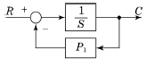
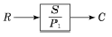
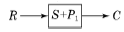
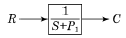
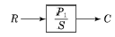
(정답률: 64%)
62. 프로세스 제어나 자동 조정 등 목푯값이 시간에 대하여 변화하기 않는 제어를 무엇이라 하는가?
- 추종제어
- 비율제어
- 정치제어
- 프로그램제어
(정답률: 71%)
63. 50Ω의 저항 4개를 이용하여 가장 큰 합성저항을 얻으면 몇 Ω인가?
- 75
- 150
- 200
- 400
(정답률: 81%)
64. 임피던스 강하가 4%인 어느 변압기가 운전 중 단락 되었다면 그 단락전류는 정격전류의 몇 배가 되는가?
- 10
- 20
- 25
- 30
(정답률: 61%)
65.
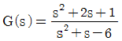
인 특성방정식의 근은?- -1
- -3, 2
- -1, -3
- -1, -3, 2
(정답률: 63%)
66. 피측정단자에 그림과 같이 결선하여 전압계로 e(V)라는 전압을 얻었을 때 피측정단자의 절연저항은 몇 M Ω인가? (단, Rm : 전압계 내부저항(Ω), V : 시험전압(V)이다.)
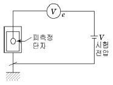
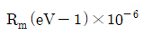
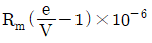
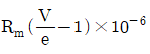
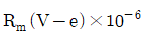
(정답률: 61%)
67. 배리스터(Varistor)란?
- 비직선적인 전압 - 전류 특성을 갖는 2단자 반도체소자이다.
- 비직선적인 전압 - 전류 특성을 갖는 3단자 반도체소자이다.
- 비직선적인 전압 - 전류 특성을 갖는 4단자 반도체소자이다.
- 비직선적인 전압 - 전류 특성을 갖는 리액턴스소자이다.
(정답률: 69%)
68. 잔류 편차(off-set)를 발생하는 제어는?
- 미분 제어
- 적분 제어
- 비례 제어
- 비례 적분 미분 제어
(정답률: 68%)
69. 교류에서 실횻값과 최댓값의 관계는?
- 실횻값=최댓값/(√2)
- 실횻값=최댓값/(√3)
- 실횻값=최댓값/2
- 실횻값=최댓값/3
(정답률: 75%)
70. 직류발전기 전기자 반작용의 영향이 아닌 것은?
- 절연내력의 저하
- 자속의 크기 감소
- 유기기전력의 감소
- 자기 중성축의 이동
(정답률: 47%)
71. 콘덴서만의 회로에서 전압과 전류 사이의 위상관계는?
- 전압이 전류보다 90도 앞선다.
- 전압이 전류보다 90도 뒤진다.
- 전압이 전류보다 180도 앞선다.
- 전압이 전류보다 180도 뒤진다.
(정답률: 71%)
72. 그림과 같은 그래프에 해당하는 함수를 라플라스 변환하면?
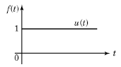
- 1
- 1/s
- 1/(s+1)
- 1/(s2)
(정답률: 57%)
73. 그림과 같은 블록선도에서 전달함수 C/R는?
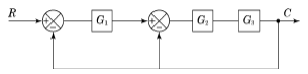
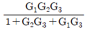
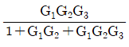
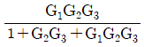
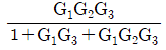
(정답률: 69%)
74. 변압기 내부 고장 검출용 보호계전기는?
- 차동계전기
- 과전류계전기
- 역상계전기
- 부족전압계전기
(정답률: 71%)
75. 온도에 따라 저항값이 변화하는 것은?
- 서미스터
- 노즐플래퍼
- 앰플리다인
- 트랜지스터
(정답률: 81%)
76. 되먹임 제어를 옳게 설명한 것은?
- 입력과 출력을 비교하여 정정동작을 하는 방식
- 프로그램의 순서대로 순차적으로 제어하는 방식
- 외부에서 명령을 입력하는데 따라 제어되는 방식
- 미리 정해진 순서에 따라 순차적으로 제어되는 방식
(정답률: 76%)
77. 보드선도의 위상여유가 45°인 제어계의 계통은?
- 안정하다.
- 불안정하다.
- 무조건 불안정하다.
- 조건에 따른 안정을 유지한다.
(정답률: 60%)
78. 직류전동기의 속도제어법으로 틀린 것은?
- 저항제어
- 계자제어
- 전압제어
- 주파수제어
(정답률: 64%)
79. 다음 중 다름 값을 나타내는 논리식은?
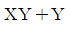
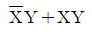
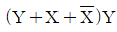
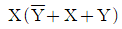
(정답률: 58%)
80. 되먹임 제어계에서 ⓐ부분에 해당하는 것은?
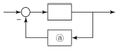
- 조절부
- 조작부
- 검출부
- 목푯값
(정답률: 73%)